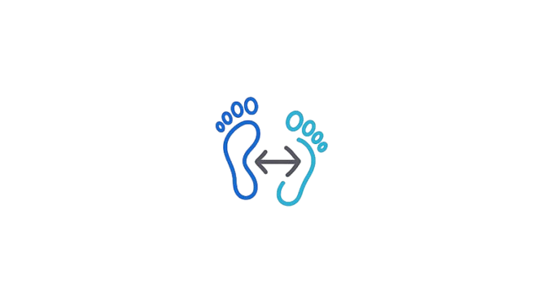
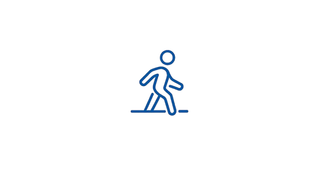
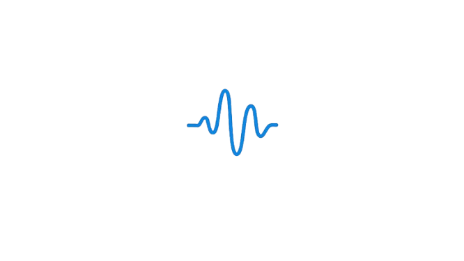
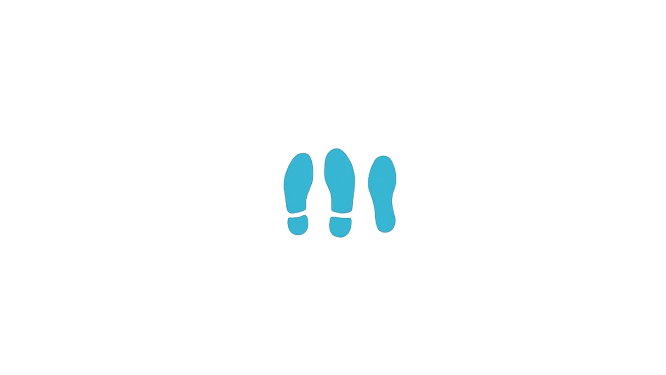
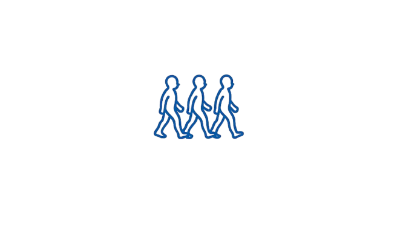

Инновации в каждом шаге
Smart Insole: стельки нового поколения
Mirai Smart Insoles - это гибкие сенсорные стельки, которые измеряют данные и анализируют вашу походку в режиме реального времени. Интеллектуальные стельки, созданные учёными и врачами. Просты в использовании — эффективны в результатах.
Смотреть демо
ИИ-обработка данных
Автоматический анализ походки на базе алгоритмов машинного обучения.
Быстрая диагностика за 5 минут
Врачи получают объективную информацию уже во время первого приёма — больше не нужно тратить часы на наблюдение и субъективные тесты.
Объективная оценка прогресса
Вы больше не полагаетесь только на жалобы пациента. Теперь есть цифровые показатели, которые можно сравнивать от сессии к сессии.
Автоматический отчёт
Сокращает рутинную документацию. Специалисту остаётся только подписать и передать пациенту результат или сохранить в базе данных.
Непрерывный контроль вне клиники
Возможность отслеживать походку не только в клинике, но и дома, в спортзале или на улице. Наблюдение за динамикой пациента в реальных условиях.
Простой интерфейс для врачей и пациентов
Не требует обучения или специального оборудования. Всё запускается через приложение — на компьютере или телефоне.
Как работает MIRAI Smart Insole?
Всего 4 шага — и вы получаете цифровой портрет походки
Установите стельки
Выберите нужный размер стельки и вставьте ее в обувь.
Подключитесь через Bluetooth
Запустите приложение и следуйте инструкциям на экране.
Пройдите 10 шагов
Просто пройдитесь, пока стельки собирают ваши данные и показывают их в режиме реального времени.
Получите отчёт
Результаты автоматически преобразуются в отчёт, который вы можете сохранить, распечатать или отправить по почте.
Метрики анализа походки
Просматривайте ключевые данные о движении, давлении и симметрии шага.

Асимметрия

Длина шага
Распределение нагрузки

Динамика

Фазы контакта

Фазы переката